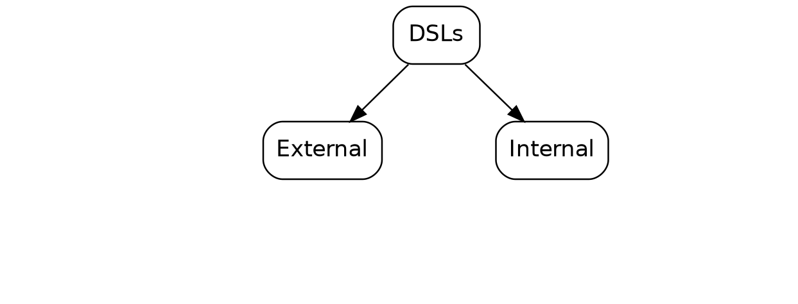
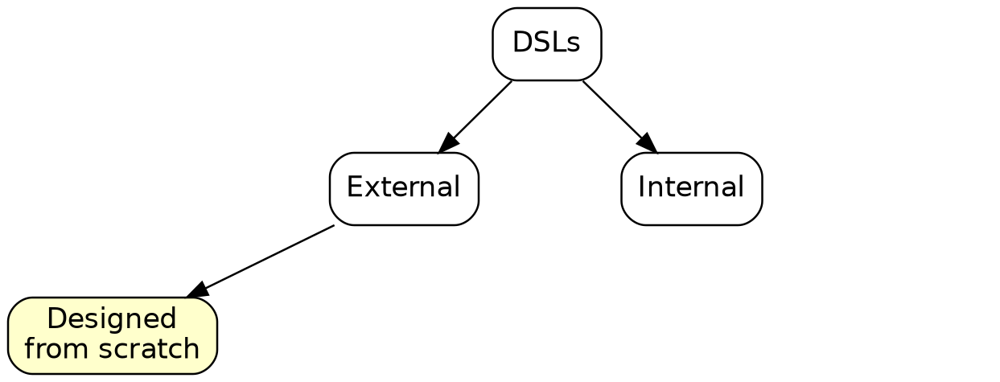
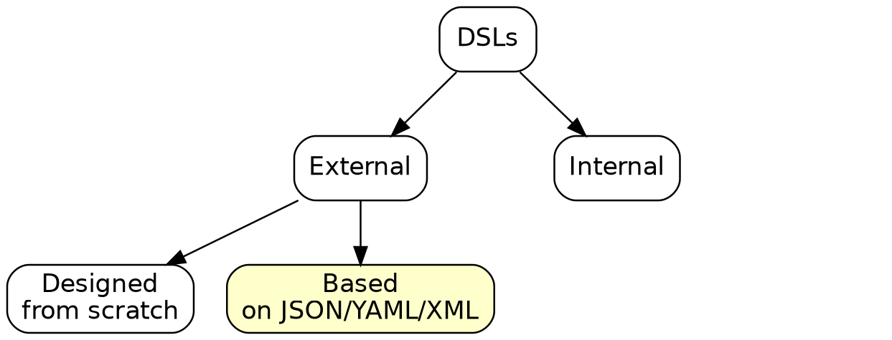
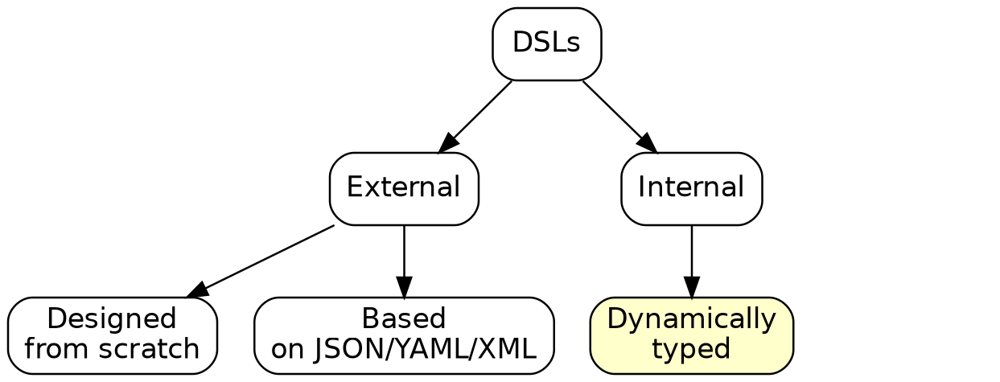

One Source to Rule Them All
Kotlin DSLs as a Single Source of Truth for Multiple Tasks
 | Ivan Ponomarev
|
What do we need DSLs for?
Code can be written by a subject-matter expert, not a programmer
What do we need DSLs for (in real life)?
Sometimes code can be written by a subject-matter expert, not a programmer
Often code can be read by a subject-matter expert
What do we need DSLs for (in real life)?
Sometimes code can be written by a subject-matter expert, not a programmer
Often code can be read by a subject-matter expert
DSL code is the single source of truth for many tasks/aspects of the project
DSLs external and internal
 | Martin Fowler, Rebecca Parsons. Domain-Specific Languages  |
Types of external DSLs
 |
|
Types of external DSLs
 |
|
Internal DSLs
 |
|
Internal DSLs
 |
|
Restrictions
Restrictions
Restrictions
Restrictions
IDE support

IDE support
IDE support

IDE support
Security Concerns
* Does not mean that you are safe, e.g. google for "Billion_laughs_attack"
Kotlin language features for DSL building
Tool | DSL syntax | General syntax |
Extension functions | | |
Infix functions | | |
Operators overloading | | |
Type aliases | | Creating empty inheritors classes and other duct tapes |
Kotlin language features for DSL building (continued)
Tool | DSL syntax | General syntax |
get/set methods convention | | |
Destructuring declaration | | |
Lambda out of parentheses | | |
Lambda with receiver | | N/A |
Context control | | N/A |
Demo time!
One source to be used in
Execution of rules
Documentation
Visualization
Validation
Serialization ("free" JSON/YAML based DSL version for our Kotlin DSL)
Mixing DSL and code
We can leave extension points in our builder:
//In our example
customCondition { Random.nextDouble() < .88} invokes TransformationC
//Or in some other DSL
customBusinessRule { checkSmthProgramatically() }Great for describing business rules (state-transition model, for example), especially if DSL defines only part of rules, which is usually the case.
Infix functions don’t work on this
brightonKotlin {
//Cannot get rid of paretheses (unlike Groovy)
talk ("Talk 1") deliveredBy {
speaker ("Speaker 1")
speaker ("Speaker 2")
}
talk ("Talk 2") deliveredBy {
speaker("ssd")
speaker ("Speaker 3")
}
}Infix functions don’t work on this: a workaround
brightonKotlin {
//Cannot get rid of paretheses
+ "Talk 1" deliveredBy {
+ "Speaker 1"
+ "Speaker 2"
}
+ "Talk 2" deliveredBy {
+ "ssd"
+ "Speaker 3"
}
}@DslMarker
talk ("Talk 1") deliveredBy {
talk (...) // ???
}@DslMarker
@DslMarker
annotation class MeetupDsl
@MeetupDsl
class MeetupBuilder { ... }
@MeetupDsl
class SpeakersBuilder { ... }Reading/watching suggestions
 |
|
Examples for your inspiration
Gradle Kotlin DSL
Ktor Framework: https://ktor.io/
Exposed (an ORM for Kotlin): https://github.com/JetBrains/Exposed?tab=readme-ov-file#examples
Conclusions
DSL combined with designed patterns is a powerful tool for solving multiple tasks
Creating DSLs in Kotlin is not scary. You can improve parts of your existing internal APIs today making them "DSL-like"
Internal Kotlin DSLs are not the only way to implement DSLs, but definitely not the worst one in many scenarious.
Thanks for listening!
Code and slides are available on GitHub https://github.com/inponomarev/dsl-talk | @inponomarev |